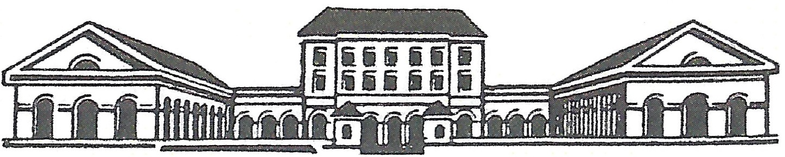

Le Cercle Philatélique Walferdange réunit depuis 1970 les amateurs de timbres-poste de Walferdange et de ses environs. Notre association, sans but lucratif, rassemble aussi bien les collectionneurs confirmés que les personnes qui découvrent tout juste le plaisir de la philatélie.
Tout au long de l'année, nous organisons des réunions mensuelles et des ateliers philatéliques. Nos membres exposent régulièrement leur collections lors d' expositions de collections de timbres, cartes maxima et cartes postales. Ce sont autant d'occasions d'échanger, de partager nos connaissances, de compléter nos collections et, surtout, de passer un moment convivial entre passionnés.
Que vous collectionniez le Luxembourg, un pays, un thème particulier ou que vous soyez simplement curieux, vous êtes le bienvenu parmi nous.
Since 1970, the Cercle Philatélique Walferdange has brought together stamp lovers from Walferdange and the surrounding area. Our non-profit society welcomes seasoned collectors as well as those just discovering the pleasure of philately.
Throughout the year we organise monthly meetings, philatelic workshops and exhibitions — all opportunities to exchange, share knowledge, complete our collections and, above all, enjoy good company among enthusiasts.
Whether you collect Luxembourg, a specific country or theme, or you are simply curious, you are most welcome to join us.
